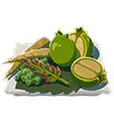
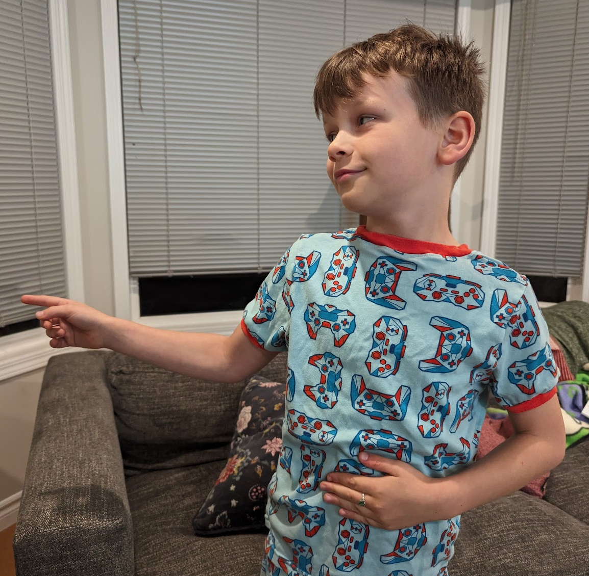

we have Recipes for you to explore
if you cook these together this recipe will give you full hearts + 17 bonus hearts.
ian's rating: 9/10 - it's a really good recipe! I would use it as a backup plan for fighting Gannon, because it doesn't have any special effects that star fragments can have.
 